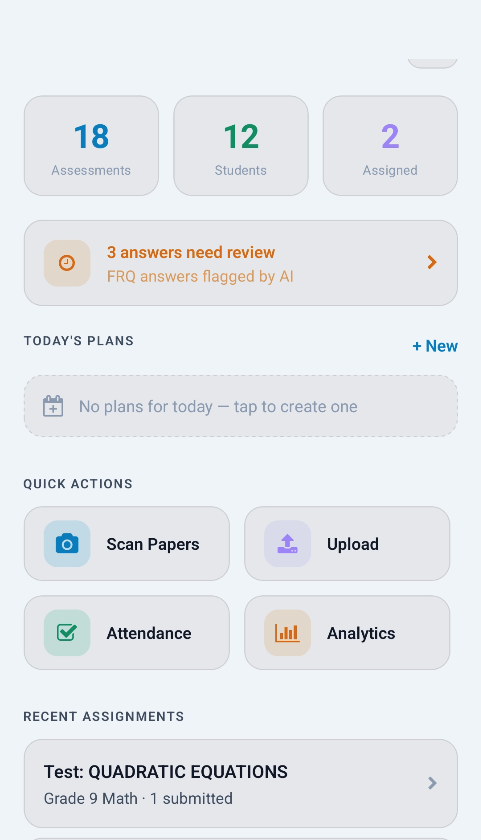
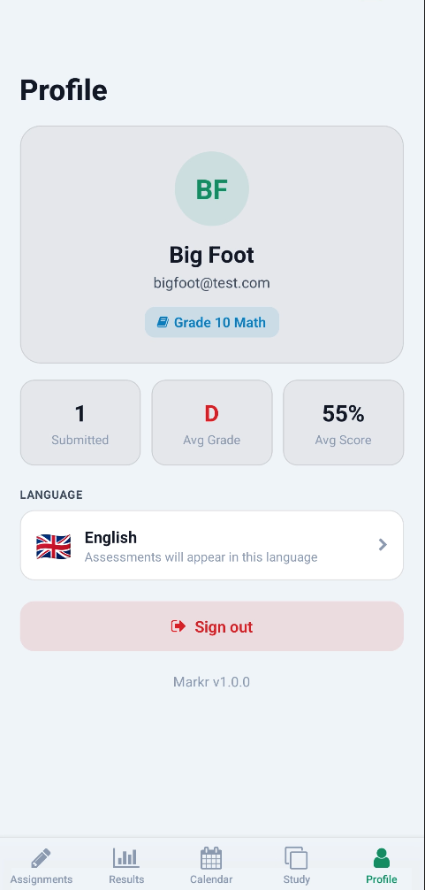

The Platform
Built for Everyone Around a Classroom, Not Just the Person Grading It.
Four views of the same engine: teachers get their evenings back, tutors get a classroom's worth of tools without the classroom, students get feedback that actually helps, and admins get visibility they don't have to ask for.
For Teachers
Get Your Evenings Back
Scan, grade, and release a full class set before the next period starts.
- Grade anything, not just bubblesFree-response and short answer, scored with real partial credit.
- Build a test in minutesFrom a textbook unit, a topic, or an old paper exam.
- One gradebook, not twoGrades sync straight to Google Classroom.

Screenshot
Grading queue + review screen
For Tutors
Run a Session Without Running a School
Everything a classroom teacher gets, sized for one student at a time.
- Practice sets on demandGenerate targeted questions on exactly the skill a student is stuck on.
- Grade practice work instantlySnap a photo of a worksheet and get it scored with feedback.
- Track one student over timeSee progress session to session, without a classroom's worth of setup.

Screenshot
Custom worksheet builder + progress over time
For Students
Feedback While It Still Matters
See what you got wrong and why, the same day, not a week later.
- Understand every mistakeAI feedback on strengths and gaps, not just a score.
- Study from your own testFlashcards generated from the exact material you were tested on.
- Never blocked by languageAssessments translate automatically for ELL students.

Screenshot
Results + per-question feedback
For Admin
See the Whole School at Once
Every teacher, every class, every score, without asking anyone for a spreadsheet.
- Real-time school performanceAverage scores and grade distribution, live across every class.
- One directoryEvery teacher and class, searchable, with rollup stats.
- Onboard a teacher with one codeSchool invite codes provision new accounts instantly.
Demo Public School · Overview
6Teachers
214Students
76%Avg
184subs
A · 34
B · 52
C · 61
D · 28
F · 9